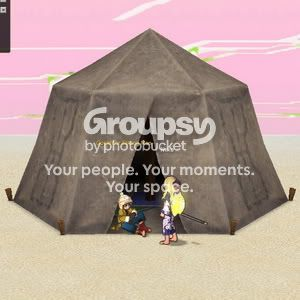
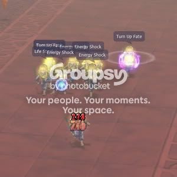
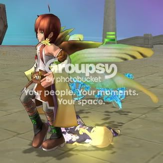
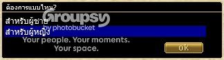

[Extra Iris] วิธีทำชุดประจำอาชีพเลเวล 99 [Complete]
เจ้าของกระทู้

[ รูปชุดประจำอาชีพ Level 99 ]
[ FIGHTER ]


[ รูปชุดประจำอาชีพ Level 99 ]
[ FIGHTER ]
http://eco.froztic.in.th/archive/ecofanclub/
http://eco.froztic.in.th/archive/ecofanclub/viewtopic.php?f=36&t=74134


 ....
....












Squalloid เขียน:จะฆ่ายังไงเนี่ย
สงสัยต้องจัดทีมเดิม
ปล.ลูกมันมีปลดสิง/กันฮีล แบบอาวุธ99มั้ยครับนี่
ปลล.เลือดมันเท่าไหร่หนอ(หัวเราะ)
ขอบคุณสำหรับข้อมูลครับจีเนโกะ^^


หมายเหตุ* Zero กับ Zoma ใชัซ้อนกันไม่ได้ สมมุติบอสใช้ Zoma ก่อน การโจมตีกายภาำพทั้งหมดจะอัดมันไม่ลดเลย แต่ยังใช้เวทย์ธาตุยิงมันลดได้
และในระหว่างเวลานี้บอสจะใช้ Zero ไม่ได้จนกว่าระยะเวลาของ Zoma จะครบ 3 นาทีซะก่อน
แต่ ! บอสสามารถใช้สกิลเดิมซ้ำเพื่อยืดระยะเวลาได้
ตัวอย่าง -> Zoma Mirage -> กันกายภาพผ่านไป 2 นาที -> Zoma Mirage ซ้ำ reset กันกายภาพเป็น 3 นาทีใหม่
ตัวอย่าง2 -> Zero -> กันธาตุ 3 นาที -> Zoma -> กันกายภาพผ่านไป 2 นาที -> Zoma ซ้ำ กันกายภาพ 3 นาทีนับใหม่
อนึ่งเวทย์โจมตีของ Sage/Sorceror จะไม่มีผลกับสกิล Zoma และ Zero กล่าวคือไม่ว่ามันจะร่ายบาเรียกันอะไรก็ตาม สองคลาสนี้เท่านั้นที่จะยิงทะลุบาเรียมันได้ตลอด
เวทย์ที่ Sage/Sorceror ที่สามารถยิงใส่บอสได้โดยไม่เกี่ยงบาเรีย
1. แขนง Energy ทั้งหมด (Enerygy Bolt, Flare,Blast ฯลฯ)
2. Luminary Nova
3. Last Inquest
4. Raving Sword (น่าจะทะลุกายภาพมั้ง.. ในวิธีลุยมันเขียนให้ยิงอันนี้เป็นหลักแฮะ)
รายละเอียดทีมชนบอสแบบได้ผล เชิญหน้า 2